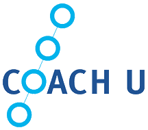

Coach Bernadette's Certifications
Professional Coaching has grown exponentially over the past few decades!
What started as a niche industry back in the '90s has become an integral part of many businesses, as well as a transformative part of people's professional, financial, personal, and romantic lives.
It's never been easier to find a coach to help you advance your career, take control of your finances, overcome your limiting beliefs, or find love.
Unfortunately, it's never been easier to become a coach, too.
The truth is Coaching is a largely unregulated industry. That means almost anyone can call themselves a "Coach" and charge clients whatever they want for their services.
All too often, that ends up being a substantial amount of money, especially for recently divorced women!
I've been a full-time Coach since 1995 and watched the rise of the Coaching industry with mixed feelings.
On the one hand, I think a new helping profession is a welcome development: the more people we have out there working to improve people's lives the better.
On the other hand, I know from personal experience that unscrupulous and inexperienced coaches have damaged Coaching's reputation and credibility in the eyes of many people.
From time to time, I see that damage reflected in the eyes of the people I meet when I tell them I'm a Dating & Relationship Coach, and it breaks my heart!
That's why I've devoted a section of Compatible Connection's website to educating potential clients, divorce professionals, and other visitors about my credentials.
There are good coaches out there, and I like to think I'm one of them, but I understand, for better or worse, the burden is on me to assure people I'm worthy of their time, trust, and attention.
A good coach can change a life: but how can you tell a good coach from a bad one?
There's no quick and easy answer to this question...but there are things women can do to maximize their chances of working with a qualified coach.
The first thing you absolutely need to do before hiring a coach is research their credentials.
My Coaching certifications, for example, were awarded through the International Coaching Federation ("ICF") and Coach U.
The ICF is is one of the world's oldest and largest professional Coaching organizations.
In addition to partnering with universities (such as Rutgers) to integrate coaching accredition into their existing curricula, they also offer three different levels of certification to private Coach practitioners.
The most advanced level of certification offered by the ICF is the Master Certified Coach ("MCC") credential, which I currently hold.
Getting your MCC is not something you can do over the course of a weekend-long retreat! In to order to qualify for an MCC credential, Coaches must first:
- Complete two lower level Coaching credentials (the ACC & PCC);
- Complete 200 hours of training;
- Complete 10 hours of Mentor Coaching (over a minimum of three months);
- Log a minimum of 2500 hours of client work, 2200 of which has to be with paying clients;
- Undergo a third-party performance evaluation;
- Complete the Coach Knowledge Assessment ("CKA"). MCC Credentials
Coach U is one of the Coaching industry's founding organizations.
They've been developing certification standards and training accredited coaches since the early '90s. In fact, Coach U has been around so long that several Coach U graduates launched the ICF in 1994!
I received my Certified Coach credential from Coach U in 1998. What I learned through Coach U has been invaluable to my Coaching practice. Not only did Coach U provide me with a strong foundation for my client work, it also provided me with a wealth of licensed coaching tools & methodologies (such as their Tru Values Program) I've customized to meet the needs of women dating after divorce.
Coach U's standards for awarding their Certified Coach credential are just as rigorous as the ICF's standards for awarding their MCC credential.
In order to qualify for a Certified Coach credential, Coaches must first:
- Complete a two-year training program;
- Undergo at least 150 hours of training in different coaching methodologies & best practices;
- Have at least two years' worth of professional Coaching experience. Certified Coach Requirements
Of course, credentials are only one piece of a much larger puzzle.
The second thing you absolutely need to do before hiring a coach is interview them!
I recommend anyone who's considering hiring a coach go through a simple, three-step screening process.
First, you'll want to do some basic due diligience to weed out scammers and unqualified imposters.
This doesn't have to be a long and involved process! A few simple Google searches should help you answer the most important questions.
Due Diligence Questions
-
Do they have a website?
- If so, it is well designed?
- Does it clearly outline their Coaching philosophy and ideal client?
- Or is it a disorganized mess of feel good cliches, pop up windows, and marketing pitches?
-
What does their social media profile look like?
- Is it just quotes, memes, and marketing links?
-
What are they saying in their public-facing articles,
podcasts, and other media?
- Are they discussing new insights, challenges, or developments in their area of expertise?
- Are they candidly sharing their own professional & personal experiences with clients and other coaches?
- Do they seem genuinely interested in sharing their knowledge with others?
-
Are they more style than substance?
- Do they go out of their way to emphasize how amazing their life is?
- Does it seem like these posts are designed to make you feel like your life isn't so great?
- Are the things they're promising prospective clients seem too good to be true?
Next, you'll want to get clear about what you hope to accomplish working with a Coach.
Even the best Coaches will struggle to help you reach your goals if you're not sure what those goals are! More importantly, being able to identify one or more clear goals can be an invaluable tool for prospective clients when interviewing Coaches.
Again, this doesn't have to be a long and involved process; but it does require you to be able to articulate the specific challenges you'd like a Coach to help you address.
Personal Questions
- What do you want?
- What are your goals?
- What do you want to achieve?
- How will you know when you've achieved it?
- What will achieving this goal (or these goals) get for you or allow you to do?
- How will it benefit you?
- What are the positive consequences for you of achieving this goal?
- What has stopped you from achieving this goal?
- What would you like from your coach?
Now it's time to interview some Coaches!
It may feel a bit strange or uncomfortable to approach a total stranger, but don't worry! Any reputable coach will always welcome the opportunity to speak with prospective clients and answer their questions. Results-driven coaching is about building a transformative relationship with your clients. That's almost impossible to do if a coach and a client aren't a good fit for each other.
If you've never worked with a Coach before, you may not know what questions to ask during your interview. Here are some basic "must ask" questions to help you get the most out of your conversation as a prospective client:
Coach Interview Questions
-
Does this coach have
professional experience in the
area (or areas) you're seeking help?
- If so, how long have they worked in each of these areas?
- How many clients like you have they worked with in the past?
-
Does this coach have
personal experience in the area
you're seeking help?
- Can they readily empathize with your needs as a client?
- Have they walked in your shoes?
-
Ask them to talk about their Coaching certifications.
- What certification (or certifications) do they have?
- How recently were they certified?
-
Ask them to share at least two or three references.
- If they're not willing to share references with you, move on!
- Ask them to speak directly to what you hope to accomplish by working with a Coach.
- Clearly state what you hope to accomplish working with a Coach. (See above.)
- Ask them to explain how they think they're uniquely positioned as a Coach to help you accomplish those goals.
If you're a prospective client who'd like to interview me, please reach out!
I'm always happy to talk with prospective clients about Coaching, Compatible Connections, my own experiences as a divorced dater, and how I can show them how to find the love of their life after divorce.
You can easily schedule a free 20-minute Discovery Session in just a few clicks using button below.
Links
Herminia Ibarra & Anne Scoular. (2019, November-December). Harvard Business Review. The Leader as Coach: How to unleash innovation, energy, and commitment. https://hbr.org/2019/11/the-leader-as-coach
Larry Yu. (2007, January). The Benefits of a Coaching Culture: Coaching increases performance, productivity and job satisfaction at all level. MIT Sloan Management Review. https://sloanreview.mit.edu/article/the-benefits-of-a-coaching-culture/.
Shana Lebowitz. (2018, September). A new breed of experts is going beyond executive and life coaches to help professionals conquer another area of their lives: dating. Business Insider. https://www.businessinsider.com/dating-coaches-help-successful-women-find-love-2018-9
Gene Hammett. (2018, April). Stop Listening to Those 'Personal Development Gurus': Use These 3 Strategies to Succeed Instead. Inc. https://inc.com/gene-hammett/everything-you-know-about-personal-development-is-probably-wrong-heres-how-to-fix-it.html
International Coaching Federation Home Page. (2021, March). https://coachingfederation.org
Coach U Home Page. (2021, March). https://coachu.com/home/
Rutgers Continuing Studies. Become an ICF-Certified Executive Coach. (2021, March). https://learnmore.rutgers.edu/leadership-certification/
International Coaching Federation. (2021, March). The Gold Standard in Coaching | ICF - ICF Credential. https://coachingfederation.org/credentials-and-standards
International Coaching Federation. (2021, March). The Gold Standard In Coaching | ICF - MCC Path. https://coachingfederation.org/credentials-and-standards/mcc-path
Further Reading
Andrew Thomas. (2019, March). 7 Ways to Know if a Business or Life Coach is Legit or an Imposter. Inc. https://inc.com/andrew-thomas/7-ways-to-know-if-a-business-or-life-coach-is-legit-or-an-imposter.html